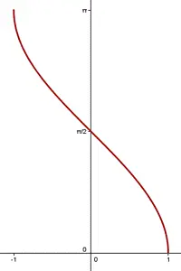
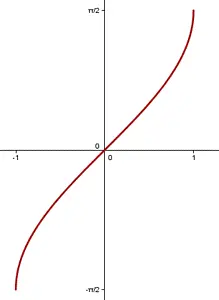
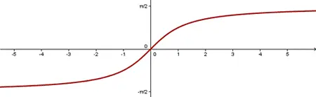
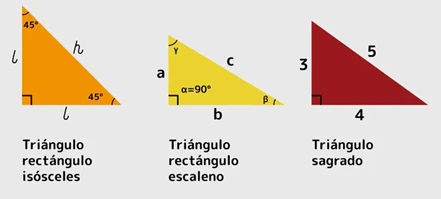

En matemáticas, las funciones trigonométricas inversas (ocasionalmente también llamadas funciones arco, funciones antitrigonométricas o funciones ciclométricas) son las funciones trigonométricas con dominios adecuadamente restringidos. Específicamente, son las inversas de las funciones seno, coseno, tangente, cosecante, secante y cotangente, y se utilizan para obtener un ángulo a partir de cualquiera de las relaciones trigonométricas angulares. Estas funciones se utilizan ampliamente en ingeniería, navegación, física y geometría.
Función Arcoseno
El arcoseno es la función inversa del seno de un ángulo. El arcoseno de un valor, denotado por \(\arcsin(x)\), corresponde al ángulo cuyo seno es \(x\).
Definición: \(\arcsin(x)\) tal que \( \sin(\theta) = x \), donde \( -1 \leq x \leq 1 \).
Dominio: \( [-1, 1] \)
Imagen: \( [-\frac{\pi}{2}, \frac{\pi}{2}] \)
Propiedades: Continua y creciente en su dominio.

Función Arcocoseno
El arcocoseno está definido como la función inversa del coseno de un ángulo. El arcocoseno de un valor, denotado por \(\arccos(x)\), corresponde al ángulo cuyo coseno es \(x\).
Definición: \(\arccos(x)\) tal que \( \cos(\theta) = x \), donde \( -1 \leq x \leq 1 \).
Dominio: \( [-1, 1] \)
Imagen: \( [0, \pi] \)
Propiedades: Continua y decreciente en su dominio.

Función Arcotangente
La función arcotangente es la función inversa de la tangente de un ángulo. El arcotangente de un valor, denotado por \(\arctan(x)\), corresponde al ángulo cuya tangente es \(x\).
Definición: \(\arctan(x)\) tal que \( \tan(\theta) = x \), donde \( x \in \mathbb{R} \).
Dominio: \( \mathbb{R} \) (todos los números reales)
Imagen: \( \left( -\frac{\pi}{2}, \frac{\pi}{2} \right) \)
Propiedades: Continua y decreciente en su dominio.

Video de ayuda
Triángulos Rectángulos
Un triángulo rectángulo es un triángulo que posee un ángulo de 90°. Es decir, es un polígono que consta de tres lados, tres vértices y tres ángulos, y uno de estos ángulos es recto.
Cada uno de los lados de esta figura geométrica recibe un nombre:
- Catetos: Son los dos lados que forman el ángulo recto.
- Hipotenusa: Es el lado de mayor tamaño y se encuentra opuesto al vértice del ángulo recto.
Una de las propiedades de los triángulos es que la suma de todos sus ángulos internos es de \(180^\circ\). Si el ángulo recto mide \(90^\circ\), los otros dos ángulos deben sumar los \(90^\circ\) restantes, por lo que necesariamente son ángulos agudos (inferiores a \(90^\circ\)).
Cuando los dos catetos tienen la misma medida, los ángulos del triángulo rectángulo son \(90^\circ\), \(45^\circ\) y \(45^\circ\), lo que da un total de \(180^\circ\).
Si los catetos tienen diferentes medidas, los ángulos agudos varían, pero nunca superan los \(90^\circ\).
Perímetro y Área de un Triángulo Rectángulo
Perímetro: El perímetro de un triángulo rectángulo se calcula sumando las longitudes de todos sus lados.
Área: El área de un triángulo rectángulo se calcula usando la fórmula:
\[ \text{Área} = \frac{1}{2} \times \text{base} \times \text{altura} \] En este tipo de triángulo, la base y la altura son los catetos, es decir, los lados que forman el ángulo recto.
Ejemplo
Fuente: Enciclopedia
